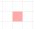

Loading fivepm...
It's 5:00pm and it's time for you to go home. You are represented by the small black square.
To move around use the W A S D keys. The I J K L keys will also move you around and are probably a better alternative for lefties. To interact with objects, use the E or U keys, which ever you prefer.
The goal of the game is to get to the exit, which is located a number of floors below the starting location in the lobby. The exit doors are the yellow squares.
To go down a floor, use the stairs. Stairs going down are indicated by the purple square.
Getting out of the office is only the main goal. The secondary goal is to increase your social standing in the work place. You start with no social standing and no social skills. As you walk around the office you will be able to sense the moods of your fellow work mates. Walk over one of your co-workers to sense their mood. They are represented by a blue square.
Once you are in the same cell as a co-worker use the interaction key (E or U) to interact with them. Their personality, mood and social status are taken into account to determine if you successfully socialised with them.
Depending on the outcome, they will either be your friend or your enemy. Tough break, but first impressions count. If they turn out to be your friend, they will turn green. If they become your enemy, they will go red.
You can keep tabs on your social status within the office and how your social skills are coming along. The UI bars at the bottom of the screen represents your progress. The black bar is for your social skills, this can only improve thankfully. The blue bar represents your social status, this will increase and decrease depending on the outcome of your interactions and the social status of the co-worker.
When you have had enough of socialising, head to the exit in the lobby. You will be rewarded with a summary of your actions and the option to start again. Try to see how many friends or enemies you can make!
fivepm was created in less then 7 days for the 2014 7drl challenge. Check out the source code github.